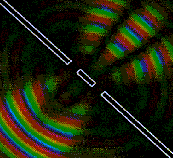
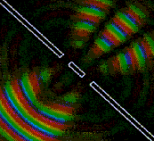

Trong thực tế thường có trường hợp nhiều sóng phát ra từ các nguồn khác nhau và cùng truyền tới một miền trong không gian. Khi đó có thể xuất hiện một hiện tượng đặc thù của sóng, gọi là hiện tượng giao thoa.
 

Dùng các dụng cụ thí nghiệm tương tự, nhưng ở đây ta thay hòn bi bằng một thanh nhẹ, ở hai đầu thanh gán hai hòn bị nhỏ đặt chạm mặt nước (hình vẽ dưới).
Khi thanh P dao động, hai hòn bi ở A và B tạo ra trên mặt nước hai hệ sóng lan truyền theo những hình tròn đồng tâm. Hệ hai sóng tròn mở đan trộn vào nhau trên mặt nước.
Khi hình ảnh sóng đã ổn định, chúng ta phân biệt được trên mặt nước một nhóm những đường cong gồm các phần tử có biên độ dao động của chúng là cực đại, và xen kẽ giữa chúng là một nhóm những đường cong khác gồm các phần tử có biên độ dao động của chúng là cực tiểu, bằng không.
Hình ảnh, trong đó có những nhóm đướng cong gồm các phần tử có biên độ dao động cực đại và những nhóm đướng cong gồm các phần tử có biên độ dao động cực tiểu gọi là hình ảnh giao thoa (Hình dưới).
Trong thí nghiệm, giả sử A và B là hai nguồn dao động cùng tần số, cùng pha với nhau và sóng của chúng cùng truyền tới một điểm M của mặt phẳng theo hai đường đi d1, d2 (Hình dưới).
Hai nguồn dao động cùng tần số và cùng pha, hoặc với độ lệch pha không đổi được gọi là nguồn kết hợp và sóng mà chúng tạo ra được gọi là sóng kết hợp.
Trong thí nghiệm mô tả ở trên, hai hòn bi không dao động độc lập với nhau. Chúng luôn luôn dao động cùng tần số và cùng pha với thanh P, và do đó chúng đúng là hai nguồn kết hợp.
Người ta chứng minh được rằng:
Tại những điểm mà hiệu đường đi d = I d2-d1I = n.λ với n = 0, 1, 2....thì hai sóng cùng pha với nhau tại điểm đó, biên độ của sóng tổng hợp lớn gấp đôi biên độ của sóng thành phần, dao động của môi trường ở đây là lớn nhất.
Tại những điểm mà hiệu đường đi d = I d2-d1I = (2n +1).λ/ 2 thì hai sóng ngược pha với nhau tại điểm đó, biên độ của sóng tổng hợp lbằng không, ở đây môi trường không dao động.
Trong toán học người ta chứng minh được rằng, quĩ tích các điểm dao động với biên độ cực đại (đường liền nét) và các điểm dao động với biên độ cực tiểu (đường chấm chấm) (trong trường hợp ta đang xét, dao động với biên độ bằng không) là họ các đường Hypebol (xem hình dưới).
Giao thoa là sự tổng hợp của hai hay nhiều sóng kết hợp trong không gian. Tại miền không gian đó, có những chỗ biên độ dao động của các phần tử môi tường được tăng cường hoặc bị giảm bớt.